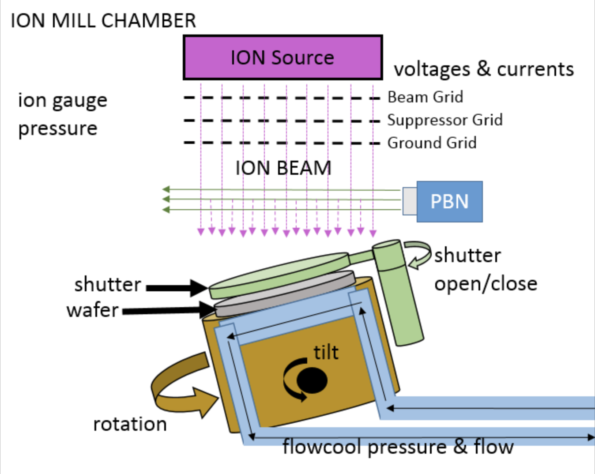
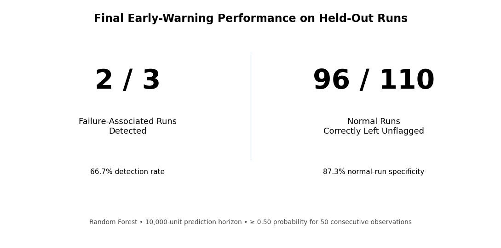
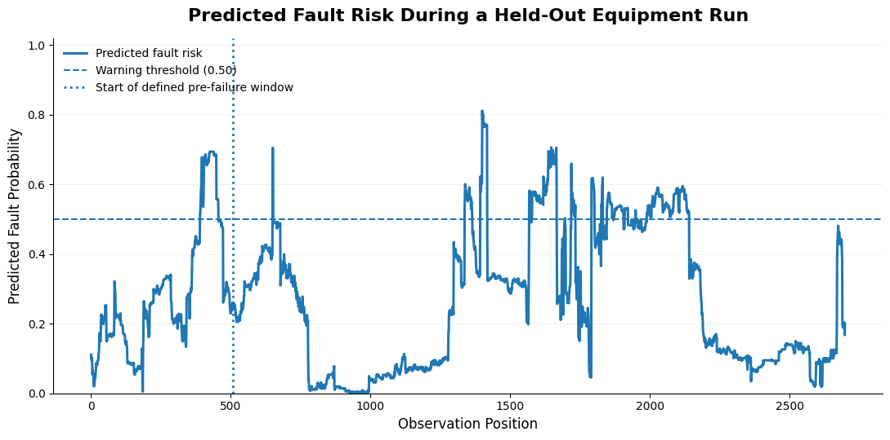
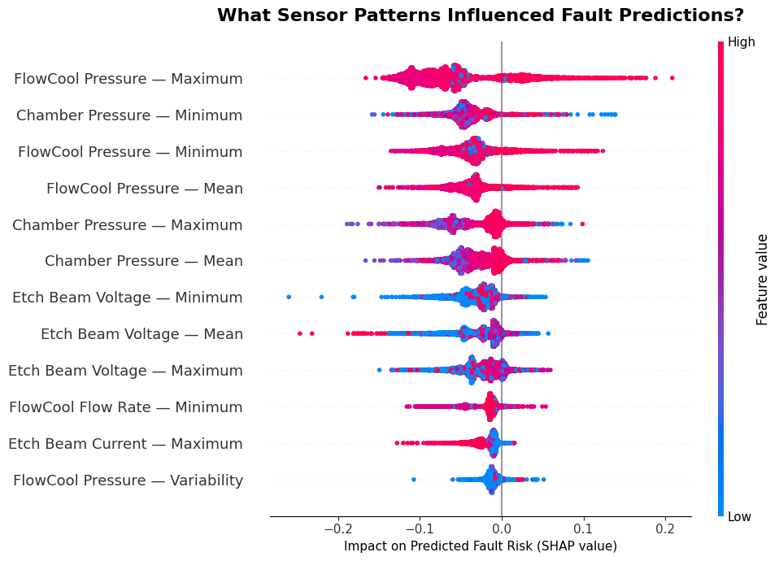
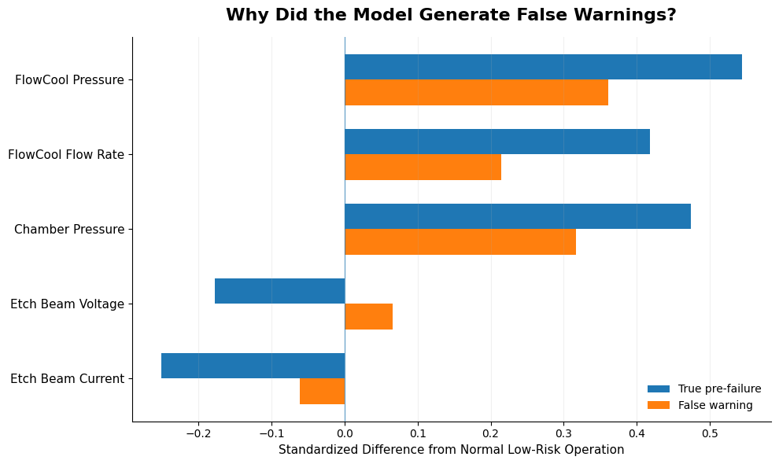

MACHINE LEARNING • SEMICONDUCTORS • PHYSICAL SYSTEMS
Semiconductor Etch Fault Prediction
An exploratory machine learning investigation into whether time-series sensor behavior from semiconductor etch equipment can provide useful early warning of equipment faults.
Independent Learning Project · Machine Learning · Semiconductor Equipment Analytics
THE INVESTIGATION
Can changes in equipment sensor behavior provide useful warning that a fault is approaching?
I built this project as an independent exploration of how machine learning and data science can be applied to semiconductor manufacturing and physical systems. Using time-series data from an ion-mill etch tool, I investigated whether recent sensor behavior could provide useful warning of an upcoming cooling-system fault.
UNDERSTANDING THE EQUIPMENT
Before predicting a fault, understand the system.
The dataset comes from an ion-mill etch tool used in semiconductor wafer manufacturing. During operation, the equipment records measurements describing conditions throughout the system.
These measurements include signals related to chamber pressure, cooling pressure and flow, and the electrical behavior of the etch beam.
For this project, I focused on a cooling-system fault and asked whether changes across these sensor signals could provide useful warning before the failure occurred.

SENSOR DATA
What the equipment tells us.
Each equipment run contains time-series measurements captured throughout operation. I focused on signals describing the cooling system, chamber conditions, and electrical behavior of the etch beam.
Cooling System
Pressure and flow measurements describing the behavior of the equipment's cooling system.
Chamber Conditions
Pressure measurements capturing changes in the environment inside the process chamber.
Etch Beam
Voltage and current measurements describing the electrical behavior of the ion beam during operation.
FEATURE ENGINEERING
Capturing recent sensor behavior.
Rather than treating every individual reading independently, I summarized recent sensor history using features such as the mean, minimum, maximum, and variability.
These rolling-window features gave the model information about both the current operating state and how sensor behavior had recently changed.
DEFINING THE PREDICTION PROBLEM
What counts as an early warning?
Instead of trying to predict the exact moment of failure, I framed the problem around whether recent equipment behavior indicated that a cooling-system fault was approaching.
Measurements within the defined period before a fault were labeled as pre-failure behavior, while observations outside that window represented normal operation. This framed the problem as a classification task: use recent sensor history to estimate whether the equipment was operating normally or showing behavior associated with an approaching fault.
MODELING APPROACH
Learning patterns associated with approaching faults.
I trained a Random Forest classifier using the rolling-window sensor features to estimate the probability that the equipment was operating within the defined pre-failure window.
Recent sensor history
Rolling-window features
Random Forest
Fault-risk probability
Equipment runs were held out from training so the model could be evaluated on runs it had not previously seen.
A warning required predicted fault risk to remain at or above 0.50 for 50 consecutive observations, reducing sensitivity to isolated probability spikes.
EARLY-WARNING PERFORMANCE
Testing the model on unseen equipment runs.
I evaluated the final warning approach on held-out equipment runs that were not used during training. The goal was to measure both whether the model could detect failure-associated runs and how often normal runs could be left unflagged.
The model detected two of three failure-associated runs.
At the selected warning rule, the model detected 66.7% of the failure-associated held-out runs while correctly leaving 87.3% of normal runs unflagged.

What did a warning look like during an equipment run?
Predicted fault risk changed throughout each run rather than producing a single static classification. Sustained periods above the warning threshold were used to identify potential early-warning conditions.

SENSOR INFLUENCE
Which signals influenced the model most?
Feature importance provided a way to examine which sensor measurements contributed most strongly to the model's predictions. This helped connect the model's output back to the underlying equipment behavior.

Cooling-system pressure and chamber-pressure features were among the strongest influences on predicted fault risk, while etch-beam measurements also contributed to the model's decisions.
ERROR ANALYSIS
Why did the model generate false warnings?
Some normal equipment runs triggered the early-warning rule even though no cooling-system fault followed. I compared these false warnings with true pre-failure behavior to understand where the model was becoming confused.
False warnings showed some of the same cooling-system and chamber-pressure shifts seen before actual faults, making those operating conditions difficult for the model to distinguish.

LIMITATIONS & NEXT ITERATION
A useful first signal, not a finished predictive-maintenance system.
The experiment showed that recent sensor behavior contained information associated with approaching faults, but the results also highlighted important limits in the data and modeling approach.
Limited failure examples
Despite more than 1.5 million usable sensor observations, the final dataset contained only 13 failure-associated runs. The held-out test set included just three, so the detection results should be treated as exploratory rather than broadly generalizable.
Anonymized timing and measurements
The dataset does not provide physical units for the anonymized measurements, and the recorded fault timestamp represents equipment shutdown rather than the unknown beginning of degradation.
Operating-state overlap
False-warning analysis showed that some normal operating states resembled true pre-failure behavior, suggesting that a stronger model may need more explicit awareness of recipe and operating context.
PROJECT TAKEAWAY
Machine learning is only part of the engineering problem.
This project gave me hands-on experience working with time-series sensor data from semiconductor manufacturing equipment and translating raw equipment behavior into a machine-learning problem.
More importantly, it showed me that useful predictive maintenance depends on more than model accuracy. Defining the warning horizon, understanding operating context, evaluating false warnings, and interpreting sensor behavior are all part of determining whether a model could actually provide useful information.
Time-Series Analysis
Feature Engineering
Machine Learning
Model Interpretation
Error Analysis